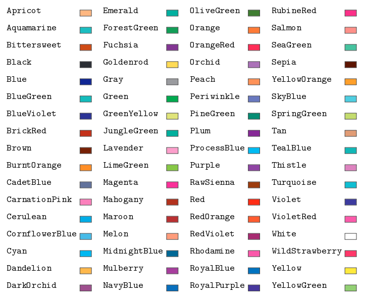

XCOLOR
xcolor is a package which allows LaTeX users to paint
the font or the background of their documents, thus adding vitality
to their work.
How to implement xcolor
At the beginning of your LaTeX document, where the other
packages are listed, simply add the following code:
CODE
\usepackage{xcolor}
How to infuse color to a text
The basic color in LaTeX are
CODE
black, blue, brown, cyan, darkgray, gray, green, lightgray,
lime, magenta, olive, orange, pink, purple, red, teal, violet, white, yellow.
To color your text on a LaTeX document, add the following code before
the text:
CODE
\textcolor{a-color-of-your-choice}{text}
Another possibility to color your text is:
CODE
{\color{a-color-of-your-choice} your text}
Nested use of xcolor
You can mix xcolor to color your text with other
basic modifiers of latex text. For example, to write a yellow, emphasized
and bold text, of normalsize, you can use one of the two following codes:
CODE
{\normalsize\color{yellow}{\textbf{\emph{\underline{your-text}}}}}
\textcolor{yellow}{\normalsize{\textbf{\emph{\underline{your-text}}}}}
How to color a background
To overlap your text on a colorful background, you can type the
following code:
CODE
\colorbox{a-color-of-your-choice}{\color{a-color-of-your-choice}text}
To add a colorful frame to your box, you can write the
following code:
CODE
\fcolorbox{declared-color-frame}{declared-color-background}
{\color{a-color-of-your-choice}text}
Note: if inside your text you keep the default color, in both of the previous examples it is unnecessary to enclose
the code
CODE
{\color{a-color-of-your-choice}text}
In this latter case you would only write:
CODE
{text}
How to add more colors
In addition to the basic colors mentioned above, there are numerous other colors
which can be implemented in your document. You should modify the xcolor package at the beginning
of the document as following:
CODE
\usepackage[usenames,dvipsnames]{xcolor}
Below you can find a list of all the addional colors.

How to create colors
There are five different ways to create a new color. Firstly, include this
code inside your LaTeX documents
Code
\definecolor{name}{model}{color-spec}
\definecolor{name}{model}{color-spec}
Where "name" is the user chosen name for the color,
"model" is the way you describe the color, and is one of "gray",
"rgb", "RGB", "HTML", and "cmyk".
| Model | Description | Color Specification | Example |
|---|---|---|---|
| grey | Shades of gray (0-1) | Just one number between 0 (black) and 1 (white), so 0.95 will be very light gray, 0.30 will be dark gray. | \definecolor{light-gray}{gray}{0.95} |
| rgb | Red, Green, Blue (0-1) | Three numbers given in the form red,green,blue; the quantity of each color is represented with a number between 0 and 1. | \definecolor{orange}{RGB}{255,127,0} |
| RGB | Red, Green, Blue (0-255) | Three numbers given in the form red,green,blue; the quantity of each color is represented with a number between 00 0 and 255. | \definecolor{orange}{RGB}{255,127,0} |
| HTML | Red, Green, Blue (00-FF) | Six hexadecimal numbers given in the form RRGGBB; similar to what is used in HTML. | \definecolor{orange}{HTML}{FF7F00} |
| cmyk | Cyan, Magenta, Yellow, Black (0-1) | Four numbers given in the form cyan,magenta,yellow,black; the quantity of each color is represented with a number between 0 and 1. | \definecolor{orange}{cmyk}{0,0.5,1,0} |